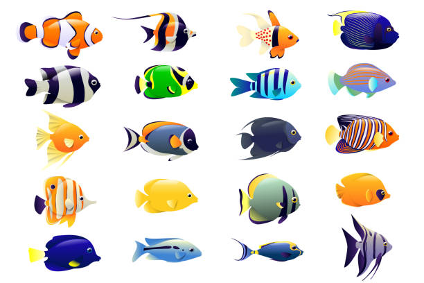

Los peces son animales acuáticos vertebrados que se han adaptado a una gran variedad de ecosistemas. Son el grupo de vertebrados más diverso del planeta, con más de 33,000 especies identificadas. Han evolucionado durante más de 500 millones de años, desarrollando características únicas que les permiten sobrevivir en diferentes hábitats, desde los ríos y lagos hasta los océanos más profundos.
Una de las características más distintivas de los peces es su sistema respiratorio. La mayoría respira a través de branquias, estructuras especializadas que extraen el oxígeno disuelto en el agua. Algunas especies, como los peces pulmonados, han desarrollado órganos respiratorios adicionales que les permiten sobrevivir fuera del agua por períodos prolongados. Además, su sistema de locomoción está compuesto por aletas, que les proporcionan estabilidad, dirección y propulsión, permitiéndoles desplazarse con facilidad a través del medio acuático.
El cuerpo de los peces está cubierto de escamas, que pueden ser de distintos tipos según la especie. Las escamas ctenoideas, por ejemplo, tienen bordes dentados y son comunes en peces óseos, mientras que las placoideas, que tienen una textura similar a la de los dientes, se encuentran en tiburones y rayas. También cuentan con una capa de mucus sobre la piel, la cual reduce la fricción con el agua y los protege de infecciones.
En términos de clasificación, los peces se dividen en tres grandes grupos. Los peces óseos, que representan la mayoría de las especies, poseen un esqueleto de hueso y una vejiga natatoria que les ayuda a controlar su flotabilidad. Entre ellos se encuentran el salmón, el atún y el pez payaso. Por otro lado, los peces cartilaginosos, como los tiburones y las mantarrayas, tienen un esqueleto formado por cartílago en lugar de hueso, lo que les da mayor flexibilidad. Finalmente, los peces agnatos, como las lampreas y mixinos, son considerados los más primitivos, careciendo de mandíbulas y teniendo un cuerpo más simple en comparación con otros peces.
Los peces habitan diversos ecosistemas acuáticos, desde aguas dulces hasta océanos profundos. En los ríos y lagos, se pueden encontrar especies como la piraña y la carpa, mientras que en los mares y océanos viven peces como el pez espada y el tiburón ballena. También existen peces que han desarrollado adaptaciones para sobrevivir en aguas salobres, como los que habitan en estuarios y manglares. En las profundidades oceánicas, donde la luz solar no llega, habitan especies con adaptaciones sorprendentes, como el pez linterna, que produce su propia luz a través de la bioluminiscencia.
La alimentación de los peces varía según la especie y el ecosistema en el que viven. Algunos son herbívoros y se alimentan de algas y plantas acuáticas, mientras que otros son carnívoros y cazan peces más pequeños o invertebrados. También existen peces omnívoros, que combinan ambos tipos de alimentación, y peces filtradores, como las mantarrayas y los tiburones ballena, que se alimentan de pequeñas partículas suspendidas en el agua.
En cuanto a su reproducción, los peces han desarrollado diversas estrategias para asegurar la supervivencia de sus crías. La mayoría son ovíparos, es decir, ponen huevos en el agua, los cuales eclosionan después de un período de incubación. Algunas especies, sin embargo, son ovovivíparas, lo que significa que los huevos permanecen dentro del cuerpo de la madre hasta que están listos para eclosionar. También hay peces vivíparos, que dan a luz crías vivas y las alimentan internamente durante su desarrollo.
Los peces han desarrollado adaptaciones fascinantes para sobrevivir en su entorno. Algunos, como el pez linterna, utilizan la bioluminiscencia para atraer presas o comunicarse con otros miembros de su especie. Otros, como los tiburones y las rayas, poseen electrorreceptores que les permiten detectar los impulsos eléctricos de sus presas incluso cuando están ocultas en la arena. También hay peces que pueden camuflarse, cambiando de color para mimetizarse con su entorno y evitar a los depredadores.
En términos ecológicos, los peces juegan un papel fundamental en los ecosistemas acuáticos, ya que ayudan a mantener el equilibrio de las cadenas alimenticias y controlan las poblaciones de otras especies. Además, tienen una gran importancia para los seres humanos, tanto en la economía como en la alimentación. La pesca comercial y la acuicultura son industrias clave en muchos países, proporcionando alimento y empleo a millones de personas en todo el mundo. También hay especies que son criadas en acuarios por su belleza y valor ornamental.
Algunas curiosidades sobre los peces incluyen el hecho de que el tiburón ballena es el pez más grande del mundo, pudiendo alcanzar los 18 metros de longitud. El pez vela es considerado el más rápido, nadando a velocidades de hasta 110 km/h. Por otro lado, el pez piedra es uno de los más venenosos, capaz de inyectar toxinas letales a través de sus espinas dorsales. También hay peces considerados fósiles vivientes, como el celacanto, que ha permanecido prácticamente sin cambios desde la era de los dinosaurios.
Los peces son, sin duda, criaturas fascinantes, con una diversidad de formas, comportamientos y adaptaciones sorprendentes. Su estudio no solo nos ayuda a comprender mejor la vida acuática, sino también a preservar estos ecosistemas y garantizar la sostenibilidad de las especies en el futuro.
Clasificación de los Peces
Los peces se dividen en tres grandes grupos principales: Peces óseos (Osteichthyes)
- Son los más numerosos y diversos.
- Poseen un esqueleto de hueso.
- Tienen una vejiga natatoria que les permite flotar sin esfuerzo.
|

|
|